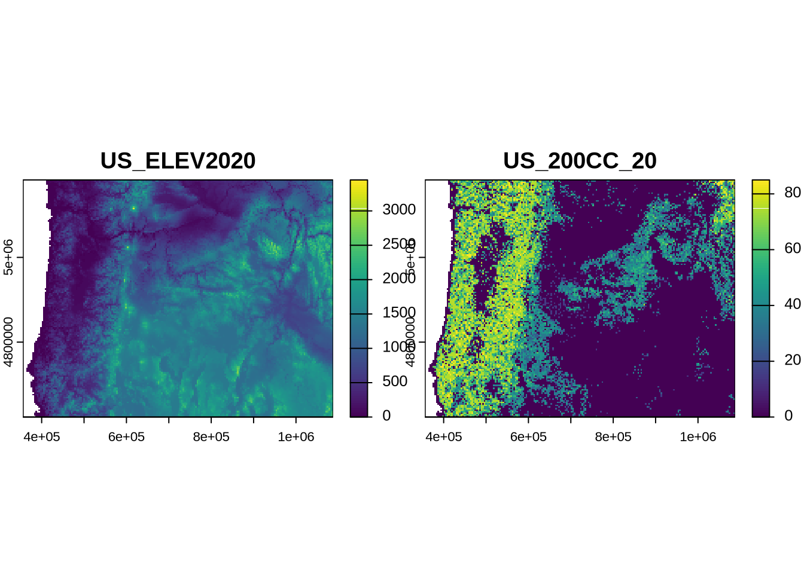
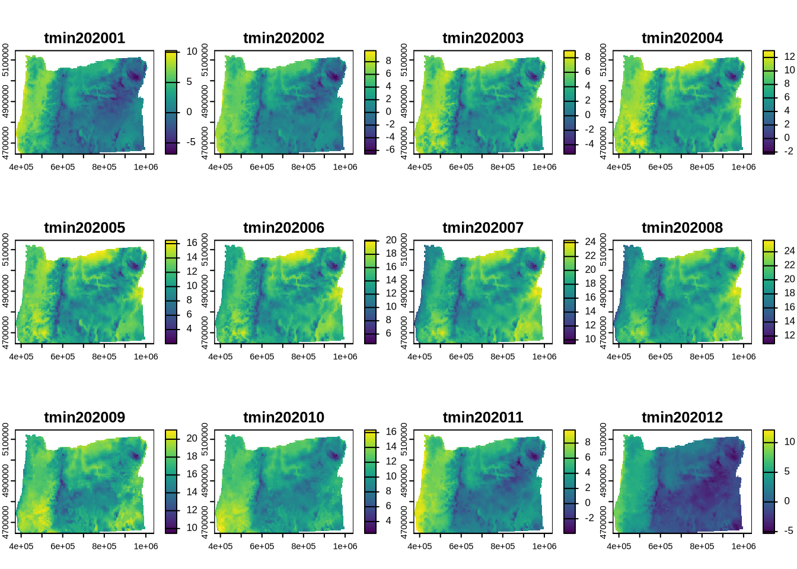
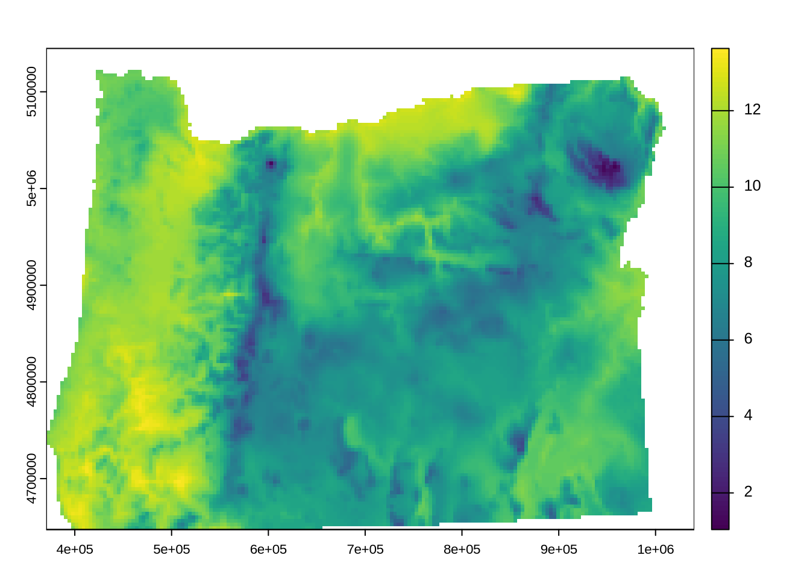

library(terra)
downloadpath <- "download/Oregon_raster_data/" # change to your download location
tmin <- rast(paste0(downloadpath,"tmin_2020_STATE_FIPS_41.tif"))
tmax <- rast(paste0(downloadpath,"tmax_2020_STATE_FIPS_41.tif"))
pr <- rast(paste0(downloadpath, "pr_2020_STATE_FIPS_41.tif"))Study Area and Environmental Features
Objectives
Identify some landscape online data resources that can be used for insect distribution mapping
Load GIS data layers into R and clean and visualize them in preparation for modeling
Landscape data resources
We’ll be downloading data using two different resources that serve landscape data to researchers:
BeeSpatial - A portal to access research data layers and summaries that extends the information presented on the Beescape app
rlandfire- an R package that provides access to a diverse suite of spatial data layers from LANDFIRE, that provides data layers for wildfire management, fuel modeling, ecology, natural resource management, climate, conservation, etc.
These resources take two different approaches to serving data, as you’ll see.
BeeSpatial
Download BeeSpatial data
BeeSpatial has a point-and-click graphical user interface. You can use it to download raster layers for climate, nesting habitat, and seasonal floral resources. Statewide rasters for these layers can be selected using the Select geographic boundaries option in the Select locations step. More information on using BeeSpatial can be found here.
For this workshop, we will need the following statewide layers, for Oregon, from BeeSpatial:
- Monthly maximum and minimum temperatures for 2020
- Monthly total precipitation for 2020
We will also be getting pollinator habitat layers from BeeSpatial – more on this later.
Load the downloaded data
If we take a look at one of the downloaded climate datasets:
prclass : SpatRaster
size : 103, 194, 12 (nrow, ncol, nlyr)
resolution : 0.04166667, 0.04166667 (x, y)
extent : -124.5625, -116.4792, 41.97917, 46.27083 (xmin, xmax, ymin, ymax)
coord. ref. : lon/lat NAD83 (EPSG:4269)
source : pr_2020_STATE_FIPS_41.tif
names : pr202001, pr202002, pr202003, pr202004, pr202005, pr202006, ...
min values : 9.680, 0.000, 8.370, 1.783, 7.118, 0.000, ...
max values : 1598.803, 816.065, 365.797, 335.101, 460.783, 312.381, ... Notice that the downloaded climate data is in geographic coordinates, which is designed for a sphere and uses angles to indicate location and distance. Note that the resolution of each pixel is 0.04166667, 0.04166667 (x, y). These values are in units of degrees. We want to change this to a projected coordinate system, which represents consistent units on the ground and matches with the LANDFIRE data.
Change the projection
We’re going to use the Universal Transverse Mercator (UTM) zone 10N projection, which works well for the state of Oregon.
tmin <- terra::project(tmin, "epsg:32610") # 32610 indicates the EPSG code for UTM 10N
tmax <- terra::project(tmax, "epsg:32610")
pr <- terra::project(pr, "epsg:32610")
prclass : SpatRaster
size : 136, 183, 12 (nrow, ncol, nlyr)
resolution : 3658.236, 3658.236 (x, y)
extent : 370553.5, 1040011, 4647323, 5144843 (xmin, xmax, ymin, ymax)
coord. ref. : WGS 84 / UTM zone 10N (EPSG:32610)
source(s) : memory
names : pr202001, pr202002, pr202003, pr202004, pr202005, pr202006, ...
min values : 10.12199, 0.0000, 8.673513, 2.089378, 7.87682, 1.932672e-03, ...
max values : 1453.62988, 779.6107, 321.533447, 327.014679, 455.98788, 2.770888e+02, ... Now looking at the attributes of the climate data, we see that the resolution value is much larger (3658.236, 3658.236 (x, y)). This is because they are now in units of meters. Each pixel of this raster has resolution of roughly 4km. We will use this as a template for the LANDFIRE data layers, since this is our coarsest resolution layer.
rlandfire
Download rlandfire data
We will use rlandfire to get additional landscape data:
- Elevation
- Canopy cover
As a first step, load the package and use one of the climate layers (loaded in the previous step) to determine the area of interest (AOI) that we will use to get the LANDFIRE data. We can use the rlandfire function getAOI to do this.
library(rlandfire)
aoi <- getAOI(tmin)
aoi[1] -124.68530 41.79367 -115.99465 46.44474The AOI is specified in geographic coordinates, with is what is required by the LANDFIRE API that rlandfire is talking to.
To request layers using rlandfire we have to specify the LANDFIRE products using their abbreviated names. The layers can be viewed here, which is also accessible using the package function rlandfire::viewProducts(). We will be selecting the elevation layer:
ELEV2020= 2020 elevation200CC_20= canopy cover
products <- c("ELEV2020", "200CC_20")
# additional parameters
email <- "youremail@example.com" # Replace with your email
lfpath <- paste0(getwd(),"/download/lf.zip") # change to your FULL download path
projection <- 32610 # UTM 10N
resolution <- res(tmin)[1] # match climate data resolution
resp <- landfireAPIv2(products = products,
aoi = aoi,
projection = projection,
resolution = resolution,
email = email,
path = lfpath,
verbose = FALSE)
Note
See the rlandfire tutorial for more background about these steps.
Load the downloaded data
In order to load the layers into R, unzip the file at the location you indicated in lfpath. We want the file with the extension ‘.tif’. The filename is long and uninformative, so we’ve already renamed it to ‘elevcc.tif’ for these directions. From plotting, we see that the two layers we requested are stacked in a single raster.
elevcc <- rast(paste0(downloadpath, "elevcc.tif"))
plot(elevcc)
Data aggregation and cleaning
We need to prepare these data layers for analysis. This means:
- We need the layers to represent the desired inputs of our species distribution model.
- We need the pixels of each layer to match with the corresponding pixels in the other layers.
Prepare model inputs
For our species distribution model, we are planning to use mean precipitation, mean temperature, and elevation as inputs. We already have elevation.
Let’s look at the climate data from BeeSpatial. This data originates from the PRISM group, which produces weather raster layers from climate station data.
plot(tmin)As you can see, this data is comprised of 12 layers. Each layer represents the minimum temperature for the month indicated by the last two digits of the layer name, e.g., May of 2020: “tmin202005”. What we want, however, is the mean temperature over the whole year. To get this, we will perform some aggregation.
Data aggregation: Calculate annual mean temperature
To get a mean annual temperature raster, we will combine the monthly min (tmin) and max (tmax) temperature layers in this way:
- Average tmin and tmax pixels for each month to get a monthly mean –> tmean_mon
- Average monthly means across the year to get the average temperature for the year –> *tmean_yr**
1. Calculate monthly mean temperature tmean_mon
We can calculate the monthly average for each month by simply adding the tmin and tmax rasters and dividing by two. This is possible because these rasters’ layers match so that the first layer (January) of tmin is added to the first layer of tmax and divided by two, etc.
tmean_mon <- (tmin + tmax)/2
plot(tmean_mon)
2. Calculate annual mean temperature tmean_yr
We simply use mean() to calculate the mean across month layers in the tmean_mon raster.
tmin_yr <- min(tmin)
tmax_yr <- min(tmax)
tmean_yr <- mean(tmean_mon)
plot(tmean_yr)
Data aggregation: Calculate mean annual precipitation prmean
Calculating the mean annual precipitation (prmean) uses the same approach as calculating the mean annual temperature from monthly means.
prmean <- mean(pr)Make model input layers align
To overlay these raster day from different sources, we need to check if they have the same projection, resolution, and alignment.
Check if the climate data and LANDFIRE data have the same projection. We’re only checking prmean and elev, but you can use the same code to check the other layers.
same.crs(crs(prmean), crs(elevcc))[1] TRUEWe expected the projection to be the same because we requested a specific projection in rlandfire.
Check if the resolution is the same.
all.equal(res(prmean), res(elevcc))[1] "Mean relative difference: 6.449424e-05"It looks like there’s a small difference resolution. If you compare the actual values of the climate data (res(prmean)) and elevation (res(elev)), it looks like the LANDFIRE layer only matches the climate layer resolution to the nearest whole number. This means that these layers also don’t align over their extents.
Resample
To make these layers’ resolution match and their pixels align, we will use resampling. This means transferring the raster data to a new pixel grid. We will do this by matching the elev and cc rasters to that of the climate datasets. To translate the data to the new grid, we will use bilinear interpolation, which takes into account the neighboring cell values for a 3x3 cell window. Be aware that there are other choices that could be made here depending on the type of data we are resampling.
elevcc2 <- resample(elevcc, # layer to be resampled
prmean, # target grid to base resampling on
method = "bilinear" # method is bilinear interpolation
)Now we can check if these layers share the same resolution:
all.equal(res(prmean), res(elevcc2))[1] TRUEAnd if their extents are the same:
all.equal(ext(prmean), ext(elevcc2))[1] TRUEPollinator habitat quality layers
We can get some additional habitat quality layers from BeeSpatial:
- Seasonal pollinator forage (spring, summer, and fall)
- Pollinator nesting habitat (ground, stem, cavity, and wood-nesting species sites)
- Potential insecticide use based on typical practices in the state (in 2014)
Download pre-processed habitat quality layers
These indices have been summarized to represent the weighted average value within 5km, using an exponential decay function as you go further from a given location (the pixel center). For more information on the forage nesting data, see Koh et al. (2015) and for insecticide use, see Douglas et al. (2022).
Since these layers are 30m resolution, downloading them for the entire state of Oregon isn’t practical for the workshop. Instead we’ve already processed them using the same projection and resampling steps as above to match the climate data layers.
These layers are already in the data/ folder in your workspace. You can also download the pre-processed layers here.